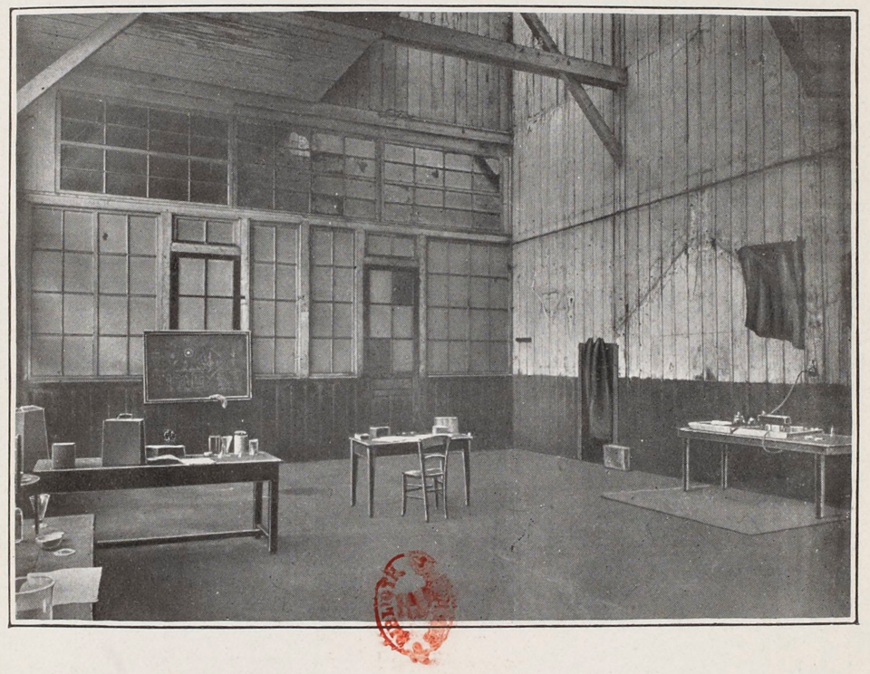
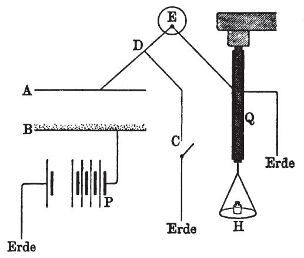

EL DOCTORADO Y NUEVOS ELEMENTOS QUIMICOS
Tras conseguir el segundo título, su siguiente reto era el doctorado. El primer paso era la elección del tema de su tesis. Tras discutirlo con su marido, resolvió centrarse en los trabajos del físico Henri Becquerel, quien había descubierto que las sales de uranio emitían unos rayos de naturaleza desconocida. Este trabajo estaba relacionado con el reciente hallazgo de los rayos X por parte del físico Wilhelm Röntgen, aunque las propiedades detrás de ese fenómeno no se entendían todavía. En la primavera de 1895, Becquerel descubrió accidentalmente la capacidad del sulfato doble de uranilo y potasio (fórmula química: K2[UO2(SO4)2](H2O)2) para ennegrecer una placa fotográfica y demostró que esa radiación, a diferencia de la fosforescencia, no dependía de una fuente externa de energía, sino que parecía surgir espontáneamente del uranio en sí.Influenciada por estos dos descubrimientos importantes, eligió los rayos de uranio como posible campo de la investigación para una tesis y con la ayuda de su esposo investigó la naturaleza de las radiaciones que producían las sales de uranio. Inicialmente tenía la intención de cuantificar la capacidad de ionización emanada por la radiación de las sales de uranio y tomó como base las notas de laboratorio de lord Kelvin a finales de 1897.
Para los experimentos empleó una técnica creada quince años antes por Pierre y su hermano Jacques Curie, quienes habían desarrollado una versión modificada del electrómetro. Con ese aparato, Marie Curie descubrió que los rayos de uranio causan que el aire alrededor de una muestra conduzca electricidad. Usando esta técnica, su primer resultado fue que la actividad de los compuestos de uranio dependía solamente de la cantidad de uranio presente. Planteó la hipótesis de que esta radiación no era el resultado de una interacción de las moléculas, sino que provenía del propio átomo. Esta hipótesis fue un adelanto importante para refutar la antigua suposición de que los átomos son indivisibles.

Ilustración del cobertizo donde Marie Curie aisló el elemento radio.
Para mantener a su familia comenzó a enseñar en la Escuela Normal Superior. Los Curie no tenían laboratorio propio y la mayor parte de sus investigaciones eran realizadas en un cobertizo propiedad de la ESPCI. Esta habitación, anteriormente una sala de disección médica de la facultad, estaba mal ventilada y no era impermeable. No eran conscientes de los efectos nocivos de la exposición continua a la radiación en su continuo trabajo con sustancias sin ninguna protección, ya que en esa época no se habían asociado enfermedades a la radiación. La facultad no patrocinaba su investigación, sino que recibían subsidios de empresas metalúrgicas y mineras y de varias organizaciones y gobiernos extranjeros.Los estudios sistemáticos de Marie Curie incluyeron algunos minerales con uranio (pechblenda, torbernita o autunita). Su electrómetro mostró que la pechblenda era cuatro veces más radiactiva que el propio uranio, pero la torbernita tuvo una lectura dos veces superior. Al observar la composición química de la torbernita —Cu(UO2)2(PO4)2·(8-12)H2O— especuló que solo el uranio era el elemento radiactivo en ese mineral;
Marie Curie decidió usar torbernita natural en lugar de la artificial que estaba disponible en el laboratorio y registró que la muestra sintética del mineral emitía menos radiación.[] Llegó a la conclusión de que, si eran correctos sus anteriores resultados de que la cantidad de uranio estaba relacionada con su radiactividad, estos dos minerales contendrían pequeñas cantidades de otras sustancias mucho más radiactivas que el uranio. Emprendió una búsqueda sistemática de sustancias adicionales que emiten radiación y alrededor de 1898 descubrió que el torio también era radiactivo.
Pierre se preocupó cada vez más por su exceso de trabajo. A mediados de 1898 se tomaron un descanso para pasar más tiempo juntos: Según el historiador Robert

Diagrama de la medición de la radiactividad, por Marie Curie.
(A, B) Placas de condensación; (C) interruptor; (E) electrómetro; (H) platillo de pesas; (P) batería; (Q) cuarzo piezoeléctrico.En aquel momento, ninguno de sus colegas había visto que el artículo de Marie Curie describía que la radiactividad de la pechblenda y la torbernita era superior al uranio: «El hecho es muy notable y da lugar a la creencia de que estos minerales podrían contener algún un elemento [desconocido] que es mucho más activo que el uranio».Más tarde recordaría que sentía un «deseo apasionado por verificar esta hipótesis lo más rápido posible».[] El 14 de abril de 1898, los Curie pesaron una muestra de 100 g de pechblenda y la molieron con un mortero. En ese momento, no se percataron de que lo que buscaban solo estaba presente en cantidades tan mínimas que al final tendrían que procesar toneladas de ese mineral. También desarrollaron un método de indicadores radiactivos con el que identificarían la capacidad de radiación de un nuevo elemento.
En julio de 1898, el matrimonio publicó en conjunto un artículo en el que anunciaba la existencia de un elemento al que llamaron «polonio», en honor a Polonia —país que en ese momento estaba repartido entre tres imperios—.En el otoño de 1898, Marie sufrió de inflamación de las yemas de los dedos, los primeros síntomas conocidos de la enfermedad de los rayos que le acompañaría el resto de su vida.
Después de unas vacaciones de verano en la región de Auvernia, el 11 de noviembre la pareja retomó la búsqueda de otro elemento desconocido. Con la ayuda de Gustave Bémont, se las arreglaron rápidamente para obtener una muestra con una radiactividad 900 veces mayor que la del uranio. El 26 de diciembre de 1898, los Curie anunciaron la existencia de un segundo elemento, al que llamaron «radio», derivado de un vocablo latino que significa rayo. En la investigación se acuñó la palabra «radiactividad».
En 1910, los Curie aislaron el radio en su estado puro, pero no tuvieron éxito con el polonio debido a que ese elemento tiene una vida media de 138 días. Entre 1898 y 1902, los Curie publicaron de manera conjunta o por separado un total de 32 trabajos científicos, entre ellos el que anunciaba que cuando el ser humano se expone al radio las células enfermas y formadoras de tumores eran destruidas más rápido que las células sanas. En 1900, Marie Curie fue la primera mujer en ser nombrada catedrática de la Escuela Normal Superior y su marido recibió una cátedra de la Universidad de París. En 1902 falleció Władysław y su hija regresó a Polonia para el entierro.